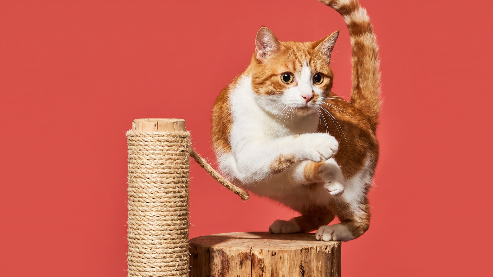

Когтеточка стоит в углу уже год, а кошка по-прежнему выбирает угол дивана. Скорее всего, дело не в кошке — дело в когтеточке. У кошек есть конкретные требования к этому предмету, и большинство бюджетных моделей им не соответствует.
🐾 Заведите дневник ухода за кошкой
Вес, шерсть, обработки, прививки — всё в одном месте. А если что-то смущает, AI-ветеринар ответит круглосуточно и бесплатно.
Завести дневник → Завести в MAX →
У вас iPhone? AnimaLife есть в App Store
Царапанье выполняет две функции одновременно. Первая — физическая: кошка вытягивается в полный рост, напрягает мышцы спины, плеч и лап. Это ежедневная растяжка, потребность в которой встроена в организм. Вторая — маркировка: на лапах кошки есть пахучие железы, и каждый раз, царапая поверхность, она оставляет метку «здесь я живу». Запретить это невозможно. Можно только перенаправить на правильный объект.
Самая частая причина, по которой кошка игнорирует когтеточку, — она слишком низкая. Кошка не может вытянуться полностью и не получает нужной растяжки. Минимальная высота вертикальной когтеточки — длина кошки от носа до хвоста в вытянутом положении. Для среднего кота это 60–70 см, для крупных пород (мейн-кун, норвежский лесной) — 80–90 см и больше. Измерьте своего питомца, прежде чем покупать.
Если когтеточка шатается при первом же усилии, кошка бросит её навсегда. Животное инстинктивно избегает нестабильных поверхностей: упавший столбик в дикой природе означает опасность. Проверьте устойчивость рукой до покупки: постамент должен не двигаться, когда вы тянете верхушку с усилием. Тяжёлое основание — главный признак надёжной когтеточки.
Кошки предпочитают разные текстуры — и это индивидуально:
Если не знаете предпочтений своей кошки — начните с сизаля. Это самый универсальный материал.
Одни кошки тянутся вверх и царапают вертикально — им нужен столбик или панель на стене. Другие предпочитают горизонтальные поверхности: растягиваются и царапают пол или лежат на картонном коврике. Понаблюдайте за своей кошкой 2–3 дня: где она чаще царапает — на диване вертикально или на ковре горизонтально? Покупайте соответствующий тип. Если не уверены — заведите оба: стоит немного.
Когтеточка в дальнем углу спальни проиграет дивану в гостиной. Кошки царапают там, где проводят время и где хотят оставить метку. Правила размещения:
Одна когтеточка на квартиру — это мало, если кошка живёт в нескольких комнатах. Ориентир: одна когтеточка на каждую зону, где кошка проводит больше часа в день. Для однокомнатной квартиры — минимум 2: у дивана и у места сна. Для трёхкомнатной — 3–4.
Старую когтеточку, которую кошка уже освоила, не спешите выбрасывать при истрёпывании: её запах — это сигнал «царапать здесь», замена новой потребует переучивания.
🐾 Чтобы уход не держать в голове
AnimaLife напомнит, когда стричь когти, вычёсывать, купать и обрабатывать от паразитов, и заведёт дневник по вашему питомцу. Бесплатно.
Настроить напоминания → Настроить в MAX →
У вас iPhone? AnimaLife есть в App Store
🐾 Понравился разбор?
Подпишитесь на канал — каждый день разбираем по одному тревожному симптому у кошек и собак: что в пределах нормы, а когда пора к врачу. Подпишитесь, чтобы не пропустить разбор, который может спасти здоровье вашего питомца.
Материал носит информационный характер и не заменяет очную консультацию ветеринара.